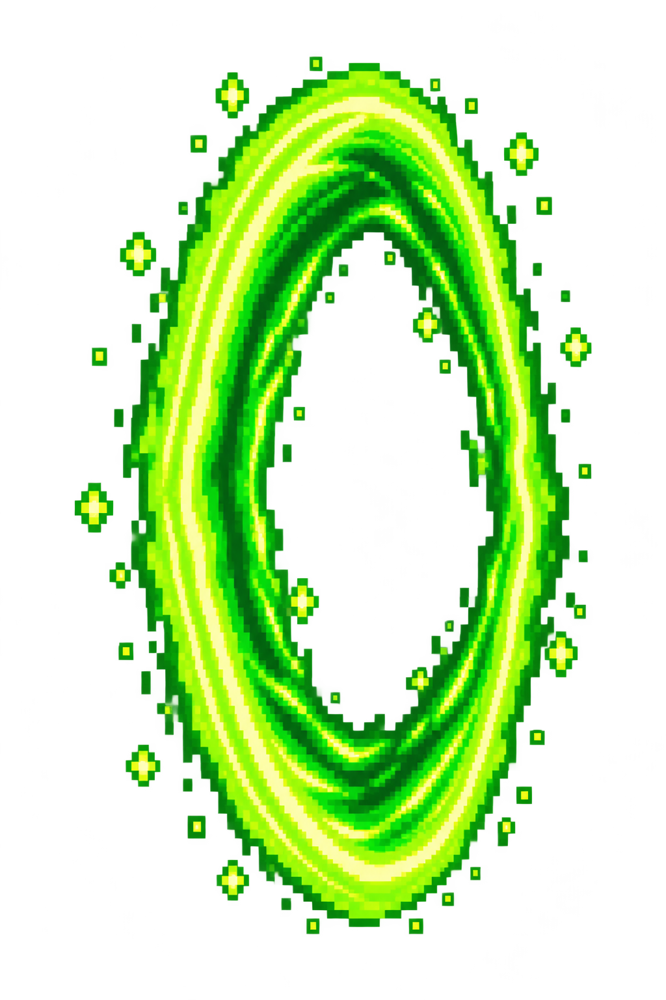
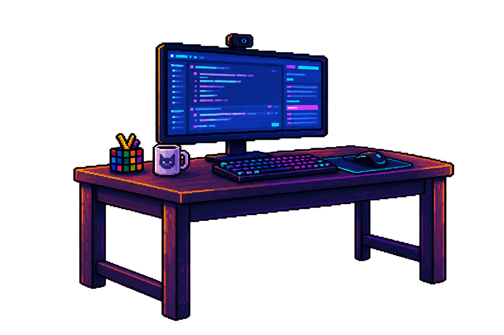
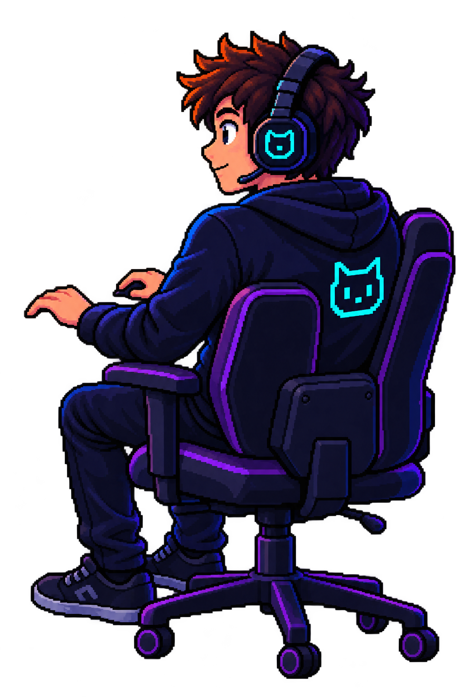

NEM TUDO É O QUE PARECE
Fui Trollado?
Antes de compartilhar, dê um pause.



Só mais uma notícia…
O próximo movimento é seu.
Cole um texto para começar a análise.
01 / SUA VEZ Conectando ao modelo
ⓘ Análise experimental de padrões textuais. Não substitui a checagem dos fatos.
Mesmo texto, quatro versões
A cena acima acompanha a versão selecionada. As probabilidades são estimativas de classe, não de veracidade.
| Versão | Estimativa não confiável | Resultado |
|---|
Como as versões se saíram nos testes?
927 textos de desenvolvimento · 5 folds externos · calibração Platt dentro do treino. Holdout excluído. Diferenças pequenas não demonstram superioridade.
| Versão | F1 NC ↑ | Brier ↓ | Variação entre grafias ↓ |
|---|
F1: média ± desvio entre folds, com limiar 0,5 e sem abstenção. Brier: erro das probabilidades. Variação: mudança média em pontos percentuais ao unir/separar letras e números nos textos de avaliação. Zero indica estabilidade, não acerto.
Abstenção em todas as versões: estimativa entre 12,5% e 87,5%. Os novos modelos são experimentais; nenhum consulta evidências sobre o acontecimento.
Explorar as animações PRÉVIA VISUAL
Estes botões simulam a cena. Não executam uma análise do texto.
02 / QUEM ESTÁ NO CONTROLE
Nosso squad_
Sete pessoas. Uma pergunta: como a IA pode ajudar a ler com mais atenção?


03 / ALÉM DO JOGOMenos impulso.
Menos impulso.
Mais pensamento crítico.
O Fui Trollado? nasceu de uma investigação sobre aprendizado de máquina e credibilidade de textos. A ideia é despertar uma pergunta antes do próximo compartilhamento.
Vamos analisar? ↗O texto vira informação
TF-IDF representa palavras e expressões. Uma Regressão Logística identifica padrões associados às classes da base estudada.
A dúvida também é uma resposta
Usamos calibração Platt e abstenção. Quando a probabilidade cai na faixa de dúvida, o resultado é inconclusivo.
Previsão não é comprovação
O modelo não consulta fontes nem verifica fatos. Foi avaliado por validação cruzada no corpus; seu desempenho em dados novos ainda precisa ser validado.